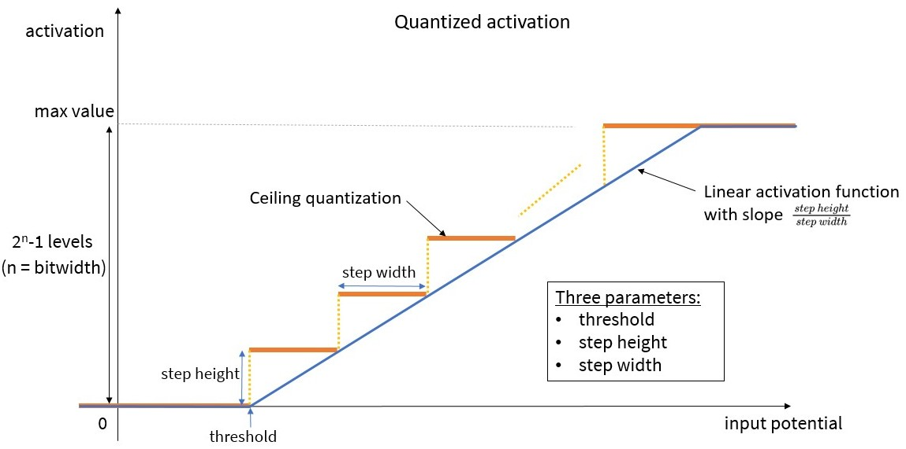

Note
Click here to download the full example code
Advanced CNN2SNN tutorial
This tutorial gives insights about CNN2SNN for users who want to go deeper into the quantization possibilities of Keras models. We recommend first looking at the user guide and the CNN2SNN conversion flow tutorial to get started with CNN2SNN.
The CNN2SNN toolkit offers an easy-to-use set of functions to get a quantized model from a native Keras model and to convert it to an Akida model compatible with the Akida NSoC. The quantize and quantize_layer high-level functions replace native Keras layers into custom CNN2SNN quantized layers which are derived from their Keras equivalents. However, these functions are not designed to choose how the weights and activations are quantized. This tutorial will present an alternative low-level method to define models with customizable quantization of weights and activations.
1. Design a CNN2SNN quantized model
Unlike the standard CNN2SNN flow where a native Keras model is quantized
using the quantize and quantize_layer functions, a customizable
quantized model must be directly created using quantized layers.
The CNN2SNN toolkit supplies custom quantized layers to replace native Keras neural layers (Conv2D, SeparableConv2D and Dense) and activations (ReLU).
Quantized neural layers
The CNN2SNN quantized neural layers are:
QuantizedConv2D, derived from
keras.Conv2DQuantizedSeparableConv2D, derived from
keras.SeparableConv2DQuantizedDense, derived from
keras.Dense
They are similar to their Keras counterparts, but have an additional
argument: quantizer. This parameter expects a WeightQuantizer object
that defines how the weights are discretized for a given bitwidth. Some
quantizers are proposed in the CNN2SNN API:
StdWeightQuantizer and TrainableStdWeightQuantizer: these two quantizers use the standard deviation of the weights to compute the range on which weights are discretized. The StdWeightQuantizer uses a range equal to a fixed number of standard deviations. The trainable version uses a variable number of standard deviations where this number is a trainable parameter of the model.
MaxQuantizer and MaxPerAxisQuantizer: these discretize on a range based on the maximum of the absolute value of the weights. The MaxQuantizer discretizes all weights within a layer based on their global maximum, whereas the MaxPerAxisQuantizer discretizes each feature kernel, in practice the last dimension of the weights tensor, independently based on its local maximum.
If those quantizers do not fit your specific needs, you can create your own (cf. 2. Weight Quantizer Details).
Note
The QuantizedSeparableConv2D layer can accept two quantizers:
one quantizer for the pointwise convolution and a
quantizer_dw for the depthwise convolution. If the latter is
not defined, it is set by default to the same value as
quantizer.
For Akida compatibility, the depthwise quantizer must be a per-tensor quantizer (i.e. all weights within the depthwise kernel are quantized together) and not a per-axis quantizer (i.e. each feature kernel is quantized independently). See more details here.
Quantized activation layers
Similarly, a quantized activation layer returns values that are discretized on a uniform grid. Two quantized activation layers are provided to replace the native ReLU layers:
ActivationDiscreteRelu: a linear quantizer for ReLU, clipped at value 6.
QuantizedRelu: a trainable activation layer where the activation threshold and the max clipping value are learned.
It is also possible to define a custom quantized activation layer. Details are given in the section 3. Quantized Activation Layer Details.
Note
The quantize function is a high-level helper that automatically
replaces the neural layers with their corresponding quantized
counterparts, using
MaxPerAxisQuantizer.
The ReLU layers are substituted by
ActivationDiscreteRelu
layers.
Load pre-trained weights from a native Keras model
In a standard quantization-aware training workflow, the pre-trained weights
from a native Keras model are loaded into the equivalent quantized model.
Weight quantizers and activation layers, such as the
TrainableWeightQuantizer and the QuantizedReLU, have trainable variables
(also called “weights” in Keras). For example, if a Conv2D layer with two
weights (convolutional weights and bias) is replaced by a QuantizedConv2D
with a TrainableWeightQuantizer, the new quantized layer has then three
weights: convolutional weights, bias and the quantizer variable.
Thus, the total number of weights in the quantized CNN2SNN model is larger,
compared to the equivalent native Keras model. Directly loading pre-trained
weights from the native Keras model using the Keras load_weights function
will then fail, as it expects that both source and destination models have
the same number of weights.
To circumvent this issue, the cnn2snn.load_partial_weights function loads
weights, even with extra variables, in the new model, provided that the
layer names in the two models are identical. We therefore recommend using the
same names in both native and quantized models.
Create a quantized model
Here, we illustrate how to create a quantized model, equivalent to a native Keras model. We use the weight quantizers and quantized activation layers available in the CNN2SNN package. Although we present only one weight quantizer and one quantized activation, a quantized model can be a mix of any quantizers and activations. For instance, every neural layer can have a different weight quantizer with different parameters.
from tensorflow.keras import Sequential, Input, layers
# Create a native Keras toy model
model_keras = Sequential([
# Input layer
Input(shape=(28, 28, 1)),
# Conv + MaxPool + BatchNorm + ReLU
layers.Conv2D(8, 3),
layers.MaxPool2D(),
layers.BatchNormalization(),
layers.ReLU(),
# Flatten + Dense + Softmax
layers.Flatten(),
layers.Dense(10),
layers.Softmax()
])
model_keras.summary()
Out:
Model: "sequential_58"
_________________________________________________________________
Layer (type) Output Shape Param #
=================================================================
conv2d_1 (Conv2D) (None, 26, 26, 8) 80
_________________________________________________________________
max_pooling2d_2 (MaxPooling2 (None, 13, 13, 8) 0
_________________________________________________________________
batch_normalization_2 (Batch (None, 13, 13, 8) 32
_________________________________________________________________
re_lu_2 (ReLU) (None, 13, 13, 8) 0
_________________________________________________________________
flatten_1 (Flatten) (None, 1352) 0
_________________________________________________________________
dense_1 (Dense) (None, 10) 13530
_________________________________________________________________
softmax (Softmax) (None, 10) 0
=================================================================
Total params: 13,642
Trainable params: 13,626
Non-trainable params: 16
_________________________________________________________________
from cnn2snn import quantization_layers as qlayers
from cnn2snn import quantization_ops as qops
# Prepare weight quantizers
q1 = qops.MaxQuantizer(bitwidth=8)
q2 = qops.MaxQuantizer(bitwidth=4)
# Get layer names to set them in the quantized model
names = [layer.name for layer in model_keras.layers]
# Create a quantized model, equivalent to the native Keras model
model_quantized = Sequential([
# Input layer
Input(shape=(28, 28, 1)),
# Conv + MaxPool + BatchNorm + ReLU
qlayers.QuantizedConv2D(8, 3, quantizer=q1, name=names[0]),
layers.MaxPool2D(name=names[1]),
layers.BatchNormalization(name=names[2]),
qlayers.QuantizedReLU(bitwidth=4, name=names[3]),
# Flatten + Dense + Softmax
layers.Flatten(name=names[4]),
qlayers.QuantizedDense(10, quantizer=q2, name=names[5]),
layers.Softmax(name=names[6]),
])
model_quantized.summary()
Out:
Model: "sequential_59"
_________________________________________________________________
Layer (type) Output Shape Param #
=================================================================
conv2d_1 (QuantizedConv2D) (None, 26, 26, 8) 80
_________________________________________________________________
max_pooling2d_2 (MaxPooling2 (None, 13, 13, 8) 0
_________________________________________________________________
batch_normalization_2 (Batch (None, 13, 13, 8) 32
_________________________________________________________________
re_lu_2 (QuantizedReLU) (None, 13, 13, 8) 2
_________________________________________________________________
flatten_1 (Flatten) (None, 1352) 0
_________________________________________________________________
dense_1 (QuantizedDense) (None, 10) 13530
_________________________________________________________________
softmax (Softmax) (None, 10) 0
=================================================================
Total params: 13,644
Trainable params: 13,628
Non-trainable params: 16
_________________________________________________________________
As detailed in the summary, the QuantizedReLU layer has two trainable
parameters. The quantized model has then two parameters more than the
native Keras model. To load weights from the native model, we then
use the provided load_partial_weights function. Remember that both
models must have the same layer names.
from cnn2snn import load_partial_weights
load_partial_weights(model_quantized, model_keras)
2. Weight Quantizer Details
How a weight quantizer works
The purpose of a weight quantizer is to compute a tensor of discretized weights. It can be split into two operations:
an optional transformation applied on the weights, e.g. a shift, a non-linear transformation, …
the quantization of the weights.
For Akida compatibility, the weights must be discretized on a symmetric grid defined by two parameters:
the bitwidth defines the number of unique values the weights can take. We define kmax = 2^(bitwidth-1) - 1, being the maximum integer value of the symmetric quantization scheme. For instance, a 4-bit quantizer must return weights on a grid of 15 values, between -7 and 7. Here, kmax = 7.
the symmetric range on which the weights will be discretized (let’s say between -lim and lim). Instead of working with the range, we use the scale factor which is defined by sf = kmax / lim, where sf is the scale factor. For instance with a 4-bit quantizer, the discretized weights will be on the grid [-7/sf, -6/sf, …, -1/sf, 0, 1/sf, …, 6/sf, 7/sf]. The maximum discrete value 7/sf is equal to lim, the limit of the range (see figure below).
{kind=link}
When training, the weight quantization is applied during the forward pass:
the weights are quantized and then used for the convolution or the fully
connected operation. However, during the back-propagation phase, the gradient
is computed as if there were no quantization and the weights are updated
based on their original values before quantization. This is usually called
the “Straight-Through Estimator” (STE) and it can be done using the
tf.stop_gradient function.
Note
Remember that the weights are stored as standard float values in
the model. To get the quantized weights, you must first retrieve
the standard weights, using get_weights(). Then, you can apply
the quantize function of the weight quantizer to obtain the
discretized weights. Finally, if you want to get the integer
quantized values (between -kmax and kmax), you must multiply
the discretized weights by the scale factor.
How to create a custom weight quantizer
The CNN2SNN API proposes a way to create a custom weight quantizer. It must
be derived from the WeightQuantizer base class and must override two
methods:
the
scale_factor(w)method, returning the scale factor based on the input weights. The output must be a scalar or vectorial TensorFlow tensor. Per-tensor quantization will give a single scalar value, whereas per-axis quantization will yield a vector with a scale factor for each feature kernel.the
quantize(w)method, returning the discretized weights based on the scale factor and the bitwidth. A Tensorflow tensor must be returned. The two operations (optional transformation and quantization) are performed in here.
Note
To be able to correctly train a quantized model, it is important
to implement the STE estimator in the quantize function, by
using tf.stop_gradient at the quantization operation.
If there is no need for the optional transformation in the custom quantizer,
the CNN2SNN toolkit gives a LinearWeightQuantizer that skips this
step. The quantize function is already provided and only the
scale_factor function must be overridden.
Why use a different quantizer
Let’s now see a use case where it is interesting to consider the behaviour of different quantizers. The MaxQuantizer used in the QuantizedDense layer of our above model discretizes the weights based on their maximum value. The default MaxPerAxisQuantizer has a similar behaviour with an additional per-axis quantization design. If weights contain outliers, that are very large weights in absolute value, this quantization scheme based on maximum value can be inappropriate. Let’s look at it in practice: we retrieve the weights of the QuantizedDense layer and compute the discretized counterparts using the MaxQuantizer of the layer.
import numpy as np
import tensorflow as tf
import matplotlib.pyplot as plt
# Retrieve weights and quantizer of the QuantizedDense layer
dense_name = names[5]
quantizer = model_quantized.get_layer(dense_name).quantizer
w = model_quantized.get_layer(dense_name).get_weights()[0]
# Artificially add outliers
w[:5, :] = 0.5
# Compute discretized weights
wq = quantizer.quantize(tf.constant(w)).numpy()
# Show original and discretized weights histograms
def plot_discretized_weights(w, wq):
xlim = [-0.095, 0.53]
fig, (ax1, ax2) = plt.subplots(1, 2)
ax1.hist(w.flatten(), bins=50)
ax1.set_xlim(xlim)
ax1.get_yaxis().set_visible(False)
ax1.title.set_text("Original weights distribution")
vals, counts = np.unique(wq, return_counts=True)
ax2.bar(vals, counts, 0.005)
ax2.set_xlim(xlim)
ax2.get_yaxis().set_visible(False)
ax2.title.set_text("Discretized weights distribution")
plt.tight_layout()
plt.show()
plot_discretized_weights(w, wq)
The graphs above illustrate that a MaxQuantizer applied on weights with outliers will keep the full range of weights to discretize. In this use case, the large majority of weights is between -0.1 and 0.1, and are discretized on only three quantization values. The outliers at 0.5 are preserved after quantization. If outlier weights don’t represent much information in the layer, it can be preferable to use another weight quantizer which “forgets” them.
The StdWeightQuantizer is a good alternative for this use case: the quantization range is based on the standard deviation of the original weights. Outliers have little impact on the standard deviation of the weights. Then the outliers can be out of the range based on the standard deviation.
In this tutorial, instead of directly using the StdWeightQuantizer, we
present how to create a quantizer. The custom quantizer created below is a
simplified version of the StdWeightQuantizer. It is derived from the
LinearWeightQuantizer.
As mentioned above, the quantize function is already implemented in
LinearWeightQuantizer. Only the scale_factor function must be
overridden.
# Define a custom weight quantizer
class CustomStdQuantizer(qops.LinearWeightQuantizer):
"""This is a custom weight quantizer that defines the scale factor based
on the standard deviation of the weights.
The weights in range (-2*std, 2*std) are quantized into (2**bitwidth - 1)
levels and the weights outside this range are clipped to ±2*std.
"""
def scale_factor(self, w):
std_dev = tf.math.reduce_std(w)
return self.kmax_ / (2 * std_dev)
quantizer_std = CustomStdQuantizer(bitwidth=4)
# Compute discretized weights
wq = quantizer_std.quantize(tf.constant(w)).numpy()
# Show original and discretized weights histograms
plot_discretized_weights(w, wq)
The two graphs above show that using a quantizer based on the standard deviation can remove the outliers and give a finer discretization of the weights between -0.1 and 0.1. In this toy example, the MaxQuantizer discretizes the “small” weights on 3 quantization values, whereas the CustomStdQuantizer discretizes them on about 13-14 quantization values. Depending on the need to preserve the outliers or not, one quantizer or the other is preferable.
In our experience, the MaxPerAxisQuantizer yields better results in most use cases, especially for post-training quantization, which is why it is the default quantizer.
3. Quantized Activation Layer Details
How a quantized activation works
A quantized activation layer works as a ReLU layer with an additional quantization step. It can then be seen as a succession of two operations:
a linear activation function, clipped between zero and a maximum activation value
the quantization, which is a ceiling operation. The activations will be uniformly quantized between zero and the maximum activation value.
The linear activation function is defined by (cf. the blue line in the graph below):
the activation threshold: the value above which a neuron fires
the maximum activation value: any activation above will be clipped
the slope of the linear function: unlike a ReLU function with a fixed slope of 1, the CNN2SNN quantized activation accepts a different value.
The quantization operation is defined by one parameter: the bitwidth. The activation function is quantized using the ceiling operator on 2^bitwidth - 1 positive activation levels. For instance, a 4-bit quantized activation gives 15 activation levels (plus the zero activation) uniformly distributed between zero and the maximum activation value (cf. the orange line in the graph).
{kind=link}
During training, the ceiling quantization is performed in the forward pass:
the activations are discretized and then transferred to the next layer.
However, during the back-propagation phase, the gradient is computed as if
there were no quantization: only the gradient of the clipped linear
activation function (blue line above) is back-propagated. Like for weight
quantizers, this STE estimator is done using the tf.stop_gradient
function.
How to create a custom quantized activation layer
The QuantizedActivation base class lets users easily create custom
quantized activation layers. Three property functions must be overridden
and return scalar Tensorflow objects (tf.constant, tf.Variable):
the
thresholdproperty, returning the activation thresholdthe
step_heightproperty, returning the step height between two activation levels. It is defined as the maximum activation value divided by the number of activation levels (i.e. 2^bitwidth - 1)the
step_widthproperty, returning the step width as shown in the above figure. It is computed as: max_value / slope / (2^bitwidth - 1)
Note that the slope of the linear activation function is equal to step_height/step_width.
Why use a different quantized activation
The default ActivationDiscreteRelu layer does not allow choosing a maximum activation value. For instance, a 4-bit ActivationDiscreteRelu layer clips activations to 6. In use cases where input potentials are rather small, let’s say smaller than 3, clipping to 6 means that the input potentials will be quantized only on the first half of the possible activation levels. Let’s see an example.
# Create an ActivationDiscreteRelu layer
act_layer = qlayers.ActivationDiscreteRelu(bitwidth=4)
print(f"Activation step height: {act_layer.step_height.numpy():.2f}")
# Compute quantized activations for input potentials between -1 and 7
input_potentials = np.arange(-1, 7, 0.01).astype(np.float32)
activations = act_layer(input_potentials)
# Plot quantized activations
plt.plot(input_potentials, activations.numpy(), '.')
plt.vlines(3, 0, 6, 'k', (0, (1, 5)))
plt.title("Quantized activations with ActivationDiscreteRelu")
plt.tight_layout()
plt.show()
Out:
Activation step height: 0.40
We can see that, with input potentials smaller than 3, shown by the dotted vertical line, the output quantized activations only takes 7 levels, with a step height of 0.4. We don’t benefit from all the quantization levels.
One option is to define a custom quantized activation layer where we can set the maximum activation value. In our use case, we can set it to 3, in order to take advantage of all the quantization levels by reducing the step height. We suppose a slope of 1 and a threshold of half the step width (as set in ActivationDiscreteRelu). We then override the three property functions.
class CustomQuantizedActivation(qlayers.QuantizedActivation):
def __init__(self, bitwidth, max_value, **kwargs):
super().__init__(bitwidth, **kwargs)
self.max_value = max_value
self.step_height_ = tf.constant(max_value / self.levels)
@property
def step_height(self):
return self.step_height_
@property
def step_width(self):
return self.step_height_
@property
def threshold(self):
return 0.5 * self.step_height_
def get_config(self):
config = super().get_config()
config.update({'max_value': self.max_value})
return config
# Create a custom quantized activation layer
custom_act_layer = CustomQuantizedActivation(bitwidth=4, max_value=3)
print(f"Custom activation step height: "
f"{custom_act_layer.step_height.numpy():.2f}")
# Compute new quantized activations
new_activations = custom_act_layer(input_potentials)
# Plot new quantized activations
plt.plot(input_potentials, activations.numpy(), '.')
plt.plot(input_potentials, new_activations.numpy(), '.')
plt.vlines(3, 0, 6, 'k', (0, (1, 5)))
plt.legend(["ActivationDiscreteRelu", "CustomQuantizedActivation"])
plt.title("Quantized activations with CustomQuantizedActivation")
plt.tight_layout()
plt.show()
Out:
Custom activation step height: 0.20
The quantized activations are clipped to 3 as expected, and the step height is now 0.2. The activations between 0 and 3 are then discretized on 15 activation levels, versus 7 with ActivationDiscreteRelu. This new layer gives a finer discretization and is better adjusted to our use case with small potentials.
Besides, in the QuantizedReLU layer provided in the CNN2SNN toolkit, there are two trainable variables that learn the activation threshold and the step width. The step height is set to the step width, to preserve a slope of 1, as in the standard ReLU layer. This can be a suitable activation layer for use cases where the maximum activation value is not known. The layer can learn what are the best values to adapt to the input potentials.
4. How to deal with too high scale factors
A quantized Keras model may have sometimes very high scale factors, i.e. very
small weights, in the neural layers. During conversion into an Akida model,
these scale factors are used to compute the Akida fire thresholds and steps
required for Akida inference. However, these fire thresholds and steps are
limited in memory on NSoC. It may happen that their values are too big to fit
into memory and then a Runtime Error occurs at Akida inference, e.g. Runtime
Error: Error when programming layer 'separable_8': Backend Hardware(CNP):
1246278 cannot fit in a 20 bits unsigned integer.
If you’re facing this issue, it is necessary to retrain your Keras model to avoid too high scale factors in the neural layers. One possible reason for these high scale factors is the presence of very small gammas in BatchNormalization (BN) layers. Indeed, when folding BN layers into their preceding neural layers, the weights corresponding to tiny BN gammas become in turn very small, which leads to high scale factors. The akida_models package provides a tool to add constraint on BN gammas: the gammas are clipped to a minimum value of 1e-2: the gammas cannot be smaller than this threshold. The code snippet below illustrates how to use the provided tool. Note that it must be applied on the Keras float (or quantized) model before folding BN layers.
from akida_models import add_gamma_constraint
# Add BN gamma constraint on all BN layers of the model
model_keras_with_gamma_constraint = add_gamma_constraint(model_keras)
The new model can then be trained using compile() and fit() and
quantized if needed. The trained model will not have BN gammas less than 1e-2,
which is valuable to avoid very high scale factors.
Total running time of the script: ( 0 minutes 0.480 seconds)